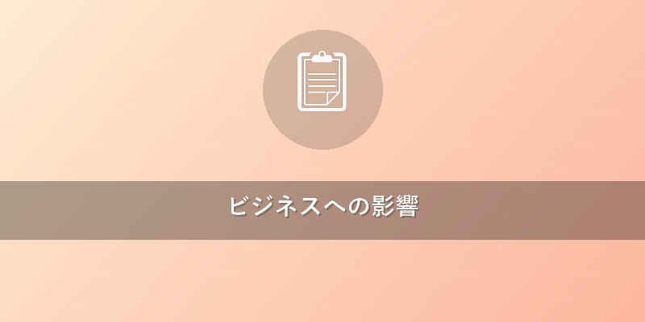
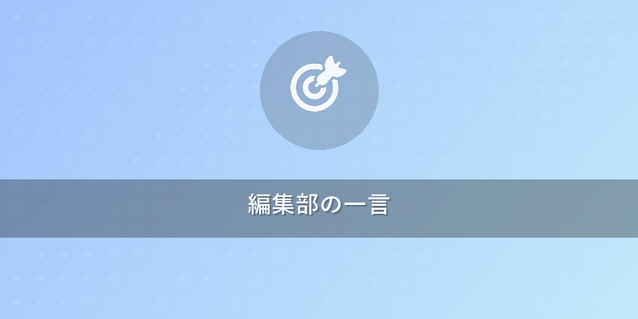

未来を拓く！量子機械学習が変えるビジネス最前線
忙しいビジネスパーソンにとって、テクノロジーの進化をキャッチアップするのは大変ですよね。今回は、未来のビジネスを大きく変える可能性を秘めた「量子機械学習」について、ポイントを絞って解説します。次世代の鍵となる量子機械学習の最前線をぜひご覧ください。
3行でわかるポイント
- 量子機械学習は、量子コンピューターの力でAIの能力を飛躍的に向上させる次世代技術です。
- 従来のAIでは難しかった複雑なデータ解析や最適化問題を高速・高精度に解き明かす潜在力があります。
- 金融、製薬、素材開発など多岐にわたる分野で、実用化に向けたPoC（概念実証）が進んでいます。

わかりやすく解説
量子機械学習（QML）とは？
「量子機械学習」（Quantum Machine Learning、略してQML）とは、文字通り、量子コンピューター（私たちが普段使う古典コンピューターとは異なる、量子力学の法則を使って計算する超高性能コンピューター）の力を借りて、機械学習（コンピューターがデータから自動的に学習し、予測や判断を行うAIの一種）を行う技術のことです。
通常のコンピューターは「0」か「1」のどちらか一方で情報を処理しますが、量子コンピューターの最小単位である量子ビット（Qubit：キュービット）は、「0」と「1」を同時に表現できる重ね合わせ（Superposition：スーパーポジション）という特殊な性質を持っています。さらに、複数の量子ビットが互いに連携し合うもつれ（Entanglement：エンタングルメント）という現象を利用することで、古典コンピューターでは想像できないほどの膨大な計算を一度に行うことが可能になります。
この量子コンピューターの特性を、データ解析やパターン認識、最適化といった機械学習のタスクに応用しようというのが、量子機械学習の基本的なアイデアです。
なぜ今、量子機械学習なのか？
現在のAI技術、特にディープラーニングは目覚ましい進歩を遂げましたが、それでも「膨大な計算資源」「特定の種類の問題での限界」「ノイズへの弱さ」といった課題を抱えています。例えば、新薬開発における数兆通りの分子の組み合わせ探索や、金融市場の複雑なリスクモデル構築など、あまりにも複雑な問題は、現状のスーパーコンピューターでも膨大な時間とコストがかかります。
量子機械学習は、これらの課題を突破する可能性を秘めています。量子コンピューターの並列性（一度に多くの計算を同時に進める能力）を活用することで、従来のAIが苦手としていた大規模データからの特徴抽出や、複雑な最適化問題をより高速に、そしてより少ないデータで学習できると期待されています。
最新の研究動向と進捗
量子機械学習の研究は、世界中で加速しています。特に注目すべきは、主要なテクノロジー企業が開発を主導している点です。 * Googleは「TensorFlow Quantum」という量子機械学習ライブラリを提供し、開発者が量子コンピューター上で機械学習モデルを構築・実行できるようにしています。 * IBMも「Qiskit Machine Learning」を通じて、同様のフレームワークを提供。 * Amazon Web Services（AWS）もクラウド上で量子コンピューティングサービス「Braket」を展開し、QMLアルゴリズムの実験環境を提供しています。
これらのプラットフォーム上で、すでに具体的なPoC（概念実証：新しい技術やアイデアが実現可能か、ビジネス的に有効かを検証すること）が進んでいます。例えば、 * 素材科学分野では、新素材の特性予測や分子構造の最適化に関するシミュレーションで、古典アルゴリズムと比較して量子アルゴリズムが有望な結果を示し始めています。特定の研究では、従来の最適化手法では発見が困難だった材料設計の改善につながる可能性が示唆されています。 * 金融分野では、複雑な金融商品の価格設定やリスクモデルの改善、ポートフォリオ最適化などへの応用研究が進んでいます。例えば、2023年の研究では、ある種のポートフォリオ最適化問題において、量子アニーリング（一種の量子コンピューター）が古典的な手法よりも高速に近似解を導き出す可能性が報告されています。 * 医療・製薬分野では、新薬候補物質のスクリーニングや、タンパク質の折り畳み構造予測など、膨大な組み合わせの中から最適な解を探し出す問題への適用が期待されています。{{internal_link:量子コンピューターの基礎}}
まだ本格的な商用利用はこれからですが、特定のニッチな問題領域では、数年以内には古典コンピューターを凌駕する「量子優位性（Quantum Advantage：特定のタスクで量子コンピューターが古典コンピューターを圧倒する性能を発揮すること）」を示す事例が出てくるだろうと予測されています。{{internal_link:量子超越性とは}}

ビジネスへの影響
量子機械学習の実用化は、多岐にわたる業界に破壊的なイノベーションをもたらすでしょう。
1. 新規事業・製品開発の加速
- 製薬・化学: 量子機械学習による新薬候補の発見、新素材の開発期間を大幅に短縮。数十年かかっていたプロセスが数年に短縮される可能性も。
- 製造業: 複雑なサプライチェーンの最適化、生産ラインの効率化、製品設計の革新。
- エネルギー: 新しいエネルギー源の開発や、既存システムでの効率最大化。
2. 高度なデータ分析と意思決定支援
- 金融: 量子機械学習による市場の超短期予測、詐欺検知の精度向上、リスク評価モデルの革新。数百万の変数を持つモデルもリアルタイムで処理可能になるかもしれません。
- 物流: 最適な配送ルートや倉庫管理の実現によるコスト削減と効率向上。
- サイバーセキュリティ: 量子暗号の解析（こちらは防御側も強化される必要がありますが）や、高度な脅威検知。
3. AIの進化と競争優位性
- 古典的な機械学習では不可能な、より複雑なパターン認識やデータ解析が可能になり、これまでにないインサイト（洞察）を得られるようになります。
- これにより、顧客行動予測の精度向上、パーソナライズされたサービス提供など、ビジネスのあらゆる側面で競争優位性を確立できます。
課題と展望
現状では、実用的な量子コンピューターはまだ発展途上にあり、ノイズ（量子ビットの状態を不安定にさせる外部からの干渉）の問題や、エラー訂正技術の未熟さが課題です。しかし、研究開発のスピードは非常に速く、徐々に実用的なアプリケーションが見出され始めています。
ビジネスリーダーとしては、今のうちからこの技術動向を理解し、自社の事業とどう結びつけられるか、長期的な視点で戦略を立て始めることが重要です。まずは、量子コンピューティングの基本を学び、関連するスタートアップや研究機関との連携を模索することから始めるのが良いでしょう。{{internal_link:量子センサーのビジネス応用}}

編集部の一言
量子機械学習、なんだかSFの世界みたいでワクワクしますよね！まだ「いつか」の話に聞こえるかもしれませんが、実は着実に「今」のビジネスに近づいてきています。この波に乗り遅れないよう、Quantum Briefで一緒に未来を覗いていきましょう！